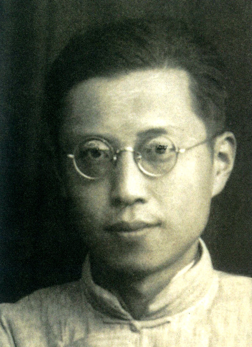
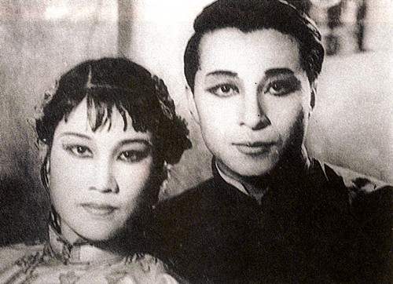

“雾季公演”时期的名人名剧欣赏（一）：曹禺和话剧《家》
1937年，抗日战争爆发，重庆作为战时陪都，具有举足轻重的地位。为彻底击垮中国人民的抗日意志，日本侵略者对重庆进行了疯狂的轰炸。但每年10月至次年5月是重庆的雾季，浓雾遮掩，日机无法轰炸。此时，在抗日民族统一战线的指引下，在中共中央南方局和周恩来同志的领导下，重庆的进步戏剧工作者从1941年10月起，有意识的将雾季作为话剧公演的季节，一直延续到1945年，共进行了4季，公演大型话剧103个，独幕剧7个，开创了中国话剧史上的一个黄金时代，俗称“雾季公演”。
中国戏剧大师曹禺，他戏剧创作的黄金时代，是在抗战时期重庆的几年间。
1938年2月，曹禺乘船沿长江逆水而上，和国立戏剧专科学校的师生们一起沿途宣传抗日到了重庆，这一年，他28岁。年底，为了纪念中国第一届戏剧节，他和宋之的（著名剧作家）合作改编《全民总动员》（又叫《黑字二十八》），旨在动员全民抗战，反对汉奸、败类。1939年、1940年，曹禺又先后创作了话剧《蜕变》和《北京人》，两剧都在重庆首演。《蜕变》揭露了抗战中国民政府的腐败，希望变革，被洪深（著名导演、剧作家）称为是“十部必须阅读的抗战剧本之一”。而《北京人》则被周恩来评价为是一部反封建的力作，是曹禺创作上的突破。

青年时期的曹禺
1942年夏，在重庆酷热难耐的日子里，曹禺在唐家沱一艘泊岸待修的旧轮船上，打着赤膊改编了巴金的《家》。在此之前，巴金曾专程去四川江安（曹禺任职的国立剧专所在地）与曹禺相聚了6天，他们彻夜畅谈，从《雷雨》谈到《蜕变》……就是那时，曹禺提出了要亲自改编《家》的剧本。曹禺认为自己对剧中觉新、瑞珏和梅表姐三人要熟悉些，改编剧本就从觉新、瑞珏的新婚之夜写起，着重写封建制度给这对夫妇和梅表姐带来的深重灾难。曹禺一再向巴金说，他没有忠实原著，但是巴金却认同这个《家》。在这部戏里所洋溢着的青春的气息和爱情的芬芳，让人联想到莎士比亚的《罗密欧与朱丽叶》，他也像莎翁一样，把一部悲剧写得如此具有浪漫的情调。
1943年，恰逢巴金的《家》出版10周年。曹禺此时推出新作话剧《家》，自然得到了各大剧团的亲睐。最后，中国艺术剧社获得了该剧的首演权。剧中觉新由“话剧皇帝”金山饰演，瑞珏则由有着话剧界“四大名旦”美称的张瑞芳饰演，据说这个角色就是曹禺为她量身打造的。
1943年4月，《家》在道门口银社剧场演出。巴金的《家》写得好，曹禺改编的《家》更具舞台魅力。第一幕，戏一层一层地展开，到了夜半洞房，觉新和瑞珏的独白，窗外的湖光山影，梅花朵朵，杜鹃声声……诗一样的境界，让观众有身临其境之感，终身难忘。据说，有人竟然连看了十余场这出话剧，越看越想看。《家》在重庆共演出86场，近9万名观众，场次和观众都创下了重庆抗战时期剧场演出的最高纪录。当时，重庆总人口约94万，也就是说，有十分之一的市民都看了《家》的演出，因此便有了“轰动重庆第一《家》”之说。

《家》的剧照，左：张瑞芳，右：金山
当然，《家》所产生的精神力量也是难以估计的。剧中，封建势力给三位青年男女的迫害，使人们深深感到不推翻封建势力，就谈不上人生的幸福与自由。然而，日本帝国主义的屠杀和抢掠，比封建势力来得更直接、凶残。《家》鼓舞着千千万万的人民，为争取自由民主和幸福，投身到抗日救亡斗争中去。
1945年重庆谈判期间，毛泽东特意在上清寺会见文化界的朋友们。在这次会见中，毛泽东紧紧握着曹禺的手，勉励他多为人民写出好剧本，并且语重心长地对曹禺说：“足下春秋鼎盛，好自为之。”